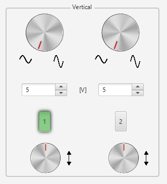

Vertical
The vertical section of the scope controls the voltage scale on the display. There are two knobs in this section, which allow you to individually control the vertical position and volts/div.
The following image below illustrates the 'Vertical Section'.
The upper knob (vertical-scaling) allows the user to adjust the vertical scaling. The more critical volts per division knob allows you to set the vertical scale on the screen. Rotating the knob clockwise will decrease the scale, and counter-clockwise will increase. A smaller scale, fewer volts per division on the screen, means you are more “zoomed in” to the waveform.
Hint: Double click on this knob will set the vertical scaling to the factor 5.0V/Div (default).
The text-field below the vertical-scaling knob allows the user to adjust the parameter V/Div more precisely compared to the knob.
The buttons labeled with '1' and '2' make it possible to switch on/off the corresponding channel. The channel is activated when background color is green.
The lower knob (vertical-positioning) controls the vertical offset of the waveform on the screen. Rotate the knob clockwise, and the wave will move up, counter-clockwise will move it down the display. You can use the position knob to offset part of a waveform off the screen.
Hint: Double click on this knob will set the corresponding signal in the middle of the signal graph (default).